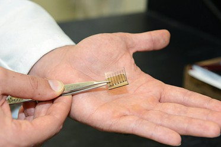

Using a grab bag of novel nanomaterials, researchers at Stanford University have built the first all-carbon solar cells. Their carbon photovoltaics don’t produce much electricity, but as the technology is perfected, all-carbon cells could be inexpensive, printable, flexible, and tough enough to withstand extreme environments and weather.
The goal is not to replace solar cells made from silicon and other inorganic materials, says Zhenan Bao, professor of chemical engineering at Stanford University, who led the work. Rather, it is to fill new niches. “Carbon is one of the most abundant elements on earth, and it is versatile,” Bao says.
Carbon is remarkably tough—atom-thick graphene and long, thin carbon nanotubes are two of the strongest materials ever tested. So carbon photovoltaics might be sprayed on the sides of buildings, or rolled up and taken into the desert. Various forms of carbon can be printed to make thin, flexible, transparent, and even stretchable electronics.
 Thanks to its versatility, carbon in one form or another was used to make each solar-cell component. The three main parts—a nanotube cathode and a graphene anode sandwiching an active layer made of nanotubes and buckyballs—were all made by printing or evaporating from inks.
Making the cathode work was the trickiest part, says Bao—researchers have had a hard time making carbon nanomaterials that collect electrons. The Stanford researchers solved the problem by picking the right flavor of nanotubes and giving them a chemical treatment. This work is described in the journal ACS Nano.
The all-carbon photovoltaics convert less than 1 percent of the energy in light into electricity (by comparison, a silicon solar cell converts around 20 percent of light into electricity). However, Bao says that her group worked mostly with off-the-shelf materials, with just a bit of tuning. She attributes part of the problem to the roughness of the carbon films, which trips up traveling charges, and says it should be possible to smooth them out by working on the processing methods.
Carbon nanomaterials “are still relatively new materials,” says Bao. “There’s a lot of research on how to control their properties and how to use them.”
IBM Yorktown researcher and 2011 MIT Technology Review young innovator Fengnian Xia, who is not involved in the work, agrees, saying that the solar cells need better-quality starting materials and processes. “The idea is great, and this is a good first demonstration, but it’s not ready for realistic applications,” he says.
Other groups are focused on making better carbon materials for the active layers of photovoltaics. According to theoretical calculations by Jeffrey Grossman at MIT, carbon solar cells should be able to reach 13 percent conversion efficiency.
For carbon solar cells to be commercially viable, says Shenqiang Ren, assistant professor of chemistry at the University of Kansas, their efficiency must cross 10 percent. Ren’s lab set the conversion-efficiency record for carbon solar cells (equipped with conventional metal electrodes) at 1.3 percent this September, in work that appeared in ACS Nano. That’s about how well the first polymer solar cells performed, he notes.
Ren is working with computational materials scientists, including Grossman, to design better carbon photovoltaics by picking the right kinds of carbon nanomaterials. With this guidance, Ren says, his lab has already made carbon solar cells that convert 5 percent of light energy into electricity, and he expects to go higher stil
by Katherine Bourzac November 15, 2012
Photos author: Mark Shwartz | Stanford